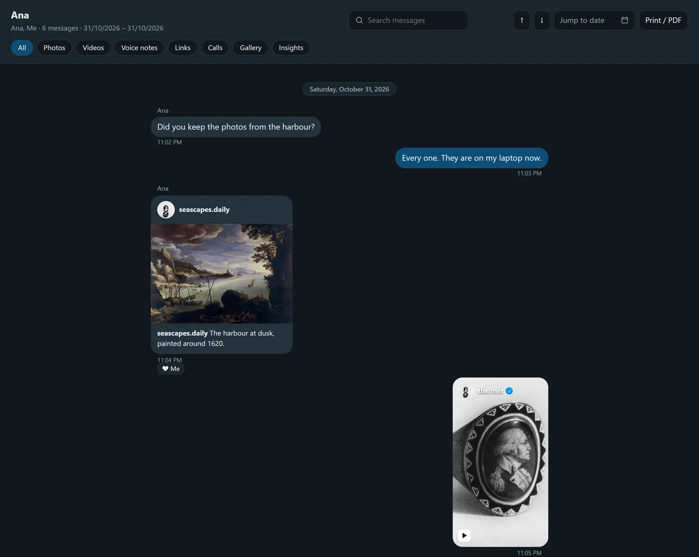
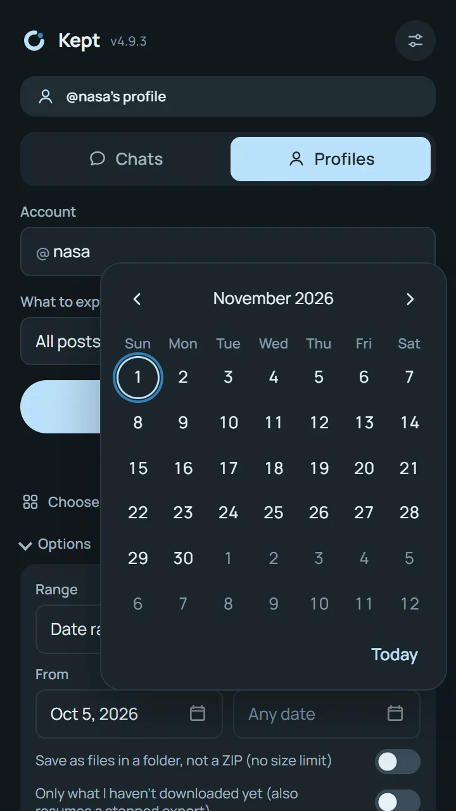
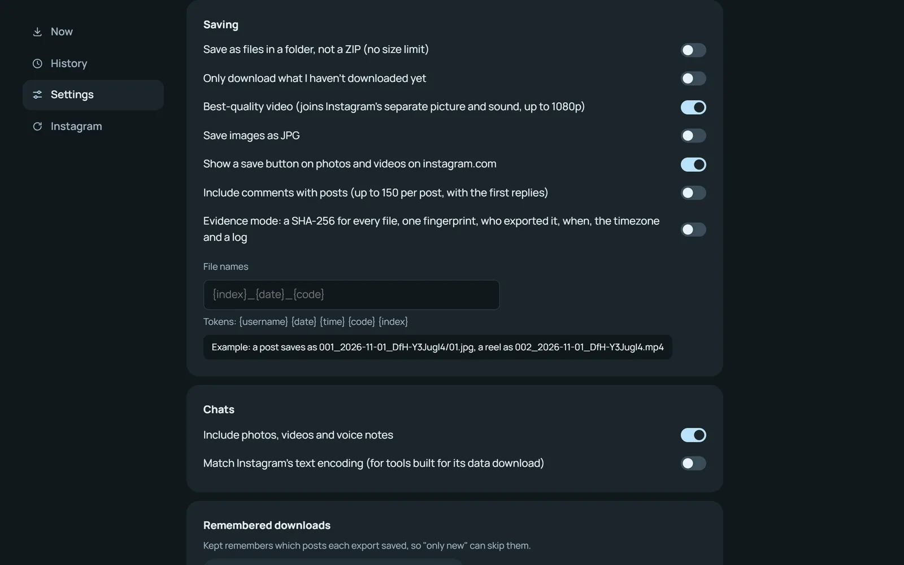

Your Instagram,
kept.
Chats with their photos and voice notes, posts, reels and stories. Saved to your own computer. Free and open source.
Add to Firefox Chrome, Brave, Edge

Nothing leaves your browser.
To set up. No account, no password.
It saves, tested before every release.
English, বাংলা, العربية, Español.
See it at work.
Real screens from Kept, with sample messages.



Everything you'd miss.
One chat or the whole inbox, a profile or your saved posts.
Chats, whole
Every message and call, with photos, videos and voice notes as files.
The whole inbox
One chat, a few, or all of them at once, with dates if you like.
Reads like the chat
Open it offline: bubbles, search, a gallery, voice notes that play.
Posts and reels
Everything on a profile you can see, each with its caption.
Stories and highlights
Today's stories before they disappear, and every highlight.
Your saved posts
Every collection, with author, link, date and caption.
Followers
A spreadsheet, and who unfollowed since last time.
Only what's new
Next time, just the new posts. It resumes if it stopped.
Evidence mode
A fingerprint for every file, for when it has to hold up.
Three clicks.
Open a chat on instagram.com.
Logged in as usual.
Click Start, then Auto-scroll.
It reads back to the first message.
Export. It's on your computer.
Every message, photo and voice note.
Ready · AnaCapturing · older messagesExported · in Downloads
0 messages
You talk. It's kept.
Type a chat on the left. “Me:” lines are yours, and [photo] adds a picture.
Nothing leaves your browser.
No account, no password, no server of ours.
Talks only to Instagram
Never
Check it yourself
Working today.
Tested against live Instagram for every release. Last checked {{CHECKED}}.
- {{CHECK_ROWS}}
Set up in a minute.
FirefoxOne click on Firefox Add-ons. It keeps itself up to date. Add to FirefoxChrome, Brave or Edge
- DownloadGet the latest release and unzip it.
- Open extensionsGo to chrome://extensions in Chrome, Brave or Edge.
- Developer modeTurn it on, top right.
- Load unpackedChoose the folder, then pin the ring.
A Chrome Web Store listing comes later. Until then, a new release is one download and one click on the reload arrow.
Questions.
Is it free?
Yes, and open source under the MIT licence. No paid version, nothing to sign up for.
Does it need my Instagram password?
No. It uses the session you're already logged in with on instagram.com, and never sees your password.
Does anything get sent to you?
No. There is no server. The only traffic is between your browser and Instagram.
Can I save my whole inbox?
Yes. Click "Several chats, or the whole inbox", pick Inbox and Message requests, and tick Every chat.
How do I read a saved chat?
Unzip it and open index.html in any browser. It works offline, with search, dates, filters and a gallery.
Can I download only new posts?
Yes. Tick "Only what I haven't downloaded yet". Kept remembers what each export saved.
What about private accounts?
You can save what your account can already see: public accounts, and private ones you follow.
Will Instagram mind?
Kept uses your normal session, paces its requests and waits when Instagram asks. It only reads; it never posts, likes or follows.
Which browsers?
Firefox 140 or later, from Firefox Add-ons; and Chrome, Brave, Edge and other Chromium browsers on a computer, from the GitHub release. Not Safari or phones yet.
Something broke?
Click Check Instagram in the popup, then Report a problem. It opens a GitHub issue with the details filled in, usernames removed, for you to review.
Made by Shakib Bin Kabir.
An AI and full-stack engineer who builds free, open-source tools. Kept is one; Lintel, an island for Windows, is another.
Free, and yours to keep.
Version {{VERSION}} for Firefox, Chrome, Brave and Edge.